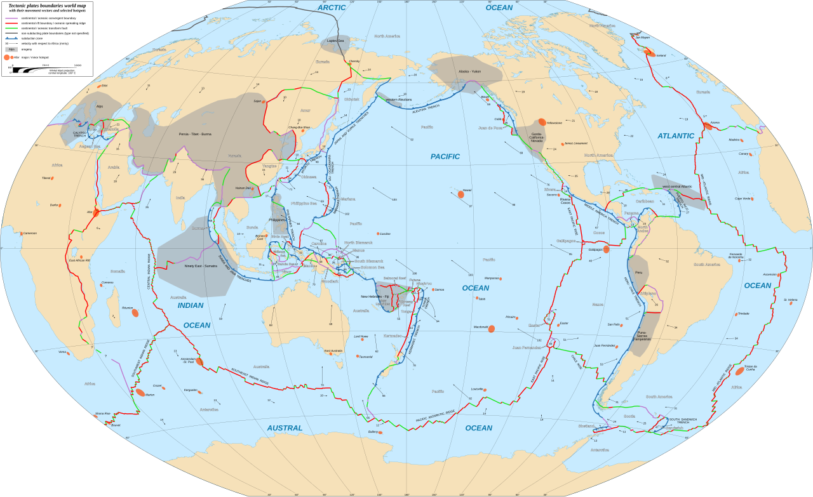
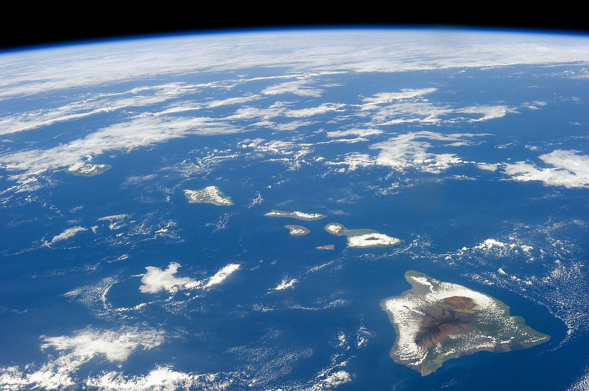

동기 유발
우리가 느끼지 못하는 사이, 판이 움직이고 있다
교과서 p. 22학습 목표
- 판 구조론이 정립되는 과정을 설명할 수 있다.
- 판을 움직이는 맨틀의 상부 운동과 플룸에 의한 구조 운동을 구분할 수 있다.

Diego Delso, CC BY-SA 4.0

Eric Gaba (Sting), CC BY-SA 3.0
판은 1년에 평균 몇 cm씩 움직인다. 이 거대한 판을 움직이는 힘은 무엇일까?
생각 1
판의 움직임은 어떻게 측정할까? (힌트: 인공위성)
생각 2
맨틀이 판을 '태우고' 갈까, 판이 스스로 움직일까?
생각 3
하와이처럼 판 한가운데에 있는 화산은 왜 생길까?
GPS로 측정한 판의 이동 방향·속도가 표시된 판 경계도를 보여 주며 판을 움직이는 힘을 자유롭게 예상하게 합니다. 교과서 운영안은 4차시(대륙 이동설~해저 지형 / 해양저 확장설·판 구조론 정립 / 탐구 / 판을 움직이는 힘·플룸)입니다.
핵심 개념 1
대륙 이동설에서 해저 지형 탐사까지
교과서 p. 22 ~ 23(1) 대륙 이동설 (베게너, 1912)
- 판 구조론이 정립되면서, 각각 따로 일어난다고 여겨지던 대륙 이동, 해양 지각의 생성과 소멸, 습곡 산맥·호상 열도 형성, 지진, 화산 활동을 하나로 설명할 수 있게 되었다.
- 베게너는 남아메리카와 아프리카의 해안선이 잘 들어맞는 데서 출발해, 약 3억 년 전 초대륙 판게아가 있었고 약 2억 년 전부터 갈라져 이동했다고 주장했다.
- 증거
- 해안선 모양의 유사성, 산맥의 지질 구조와 암석 구성의 연속성
- 멀리 떨어진 대륙에서 발견되는 고생물 화석 분포의 연속성 (메소사우루스, 글로소프테리스 등)
- 남극을 중심으로 모이는 빙하의 흔적과 이동 방향
- 한계: 대륙을 움직이는 원동력을 설명하지 못해 대부분의 과학자가 받아들이지 않았다.
(2) 맨틀 대류설 (홈스, 1929)
- 홈스는 방사성 동위 원소의 붕괴열로 맨틀이 대류하고, 그 과정에서 대륙이 이동한다고 주장했다.
- 맨틀이 상승하는 곳: 대륙이 갈라지며 새로운 섬과 해양이 생긴다.
- 맨틀이 하강하는 곳: 횡압력으로 산맥이 생기고 지각이 맨틀 속으로 들어간다.
- 한계: 당시 탐사 기술로는 맨틀 대류를 확인할 수 없어 받아들여지지 않았다.
자체 제작 모식도
(3) 음향 측심법으로 알아낸 해저 지형
- 음향 측심법: 배에서 쏜 음파가 해저면에서 반사되어 돌아오는 데 걸린 시간을 재어 수심을 구한다.
- 1900년대 초 음향 측심 탐사로, 대서양 중앙의 해저 산맥이 전 지구적으로 이어져 있다는 것을 알아냈다. → 해양저 확장설의 기초
- 대륙 주변부: 대륙붕, 대륙 사면 / 심해저: 심해저 평원, 해산, 화산섬, 해령
- 특히 해령에서 멀어질수록 수심이 깊어지고, 수심이 급격히 깊어지는 해구가 있다는 것이 밝혀졌다.
수심 = 12 v t v: 바닷물 속 음파의 평균 속력(약 1500 m/s), t: 음파의 왕복 시간
시뮬레이션 1음향 측심법으로 해저 지형 그리기
배를 움직이면 음파의 왕복 시간으로 수심을 계산하고, 측정한 곳의 해저(갈색)가 드러난다. 끝까지 탐사한 뒤 '지형 이름 보기'로 대륙붕·대륙 사면·심해저 평원·해산·해령·해구를 확인해 보자.
핵심 개념 2
해양저 확장설과 판 구조론의 정립
교과서 p. 24 ~ 26(1) 해양저 확장설 (헤스·디츠, 1962)
- 주장: 해령 아래에서 뜨거운 맨틀 물질이 올라와 새로운 해양 지각을 만들고, 해양 지각은 맨틀 대류로 해령 양쪽으로 이동하다가 해구에서 맨틀로 침강한다.
- 증거 ① 고지자기 줄무늬: 1950년대 자력계 조사로 과거에 지자기 역전이 여러 번 일어났고, 정자극기·역자극기 줄무늬가 해령을 중심으로 대칭이라는 것을 알았다. 바인과 매슈스(1963)는 이를 '해령에서 생긴 지각이 당시 자기장 방향을 기록한 채 양쪽으로 이동했기 때문'이라고 설명했다.
- 증거 ② 해양 지각의 나이: 1960년대 후반 심해저 시추로, 해령에서 멀어질수록 해양 지각의 나이가 대칭적으로 증가하고 퇴적물이 두꺼워진다는 것을 확인했다. → 해양저 확장설을 받아들이는 결정적 계기
- 가장 오래된 해양 지각도 대부분 2억 년을 넘지 않는다. 해령에서 생긴 지각이 이동하다 해구에서 섭입해 사라지기 때문이다.

Müller, R.D. 외 (NOAA 자료), CC BY 3.0
시뮬레이션 2해양저 확장과 고지자기 줄무늬
해령에서 새 지각이 만들어질 때마다 그때의 자기장 방향이 기록된다. 줄무늬가 해령을 중심으로 좌우 대칭이 되는지, 해령에서 멀수록 지각이 오래되고 퇴적물이 두꺼워지는지 확인해 보자.
자료 연계 물음 · 계산해 보기
해령에서 90 km 떨어진 지점의 해양 지각 나이가 360만 년이라면, 이 해역의 평균 확장 속도는?
속도 = 거리 ÷ 시간 = (9.0 × 106 cm) ÷ (3.6 × 106 년) = 2.5 cm/년
팁: 거리는 cm, 시간은 년으로 바꾸고 10의 거듭제곱으로 나타내면 쉽게 계산된다. 시뮬레이션 2에서 확장 속도 2.5 cm/년, 탐침 90 km로 확인해 보자.
팁: 거리는 cm, 시간은 년으로 바꾸고 10의 거듭제곱으로 나타내면 쉽게 계산된다. 시뮬레이션 2에서 확장 속도 2.5 cm/년, 탐침 90 km로 확인해 보자.
(2) 변환 단층과 지진 분포: 판 구조론의 정립
- 변환 단층 (윌슨, 1965): 해령은 연속된 구조가 아니라 수많은 단층으로 어긋나 있다. 윌슨은 해령과 해령 사이의 단층을 새로운 형태로 보고 변환 단층이라 불렀다. 양쪽 판이 반대 방향으로 움직이는 구간에서 지진이 자주 일어나고, 같은 방향으로 움직이는 구간에서는 거의 일어나지 않는다.
- 세계 표준 지진 관측망 (1960년대): 지진의 위치와 깊이를 정확히 측정한 결과, 지진은 주로 해령·변환 단층·해구 주변에서 발생하고, 해구에서는 섭입대를 따라 대륙 쪽으로 갈수록 진원이 깊어진다는 것을 알았다. → 해양 지각의 소멸을 설명하는 증거
- 판 구조론의 정립 (1960년대 후반): 아이작스가 판이 지각과 상부 맨틀로 이루어져 있음을 밝혔고, 매켄지·모건 등이 판 경계의 현상을 종합하면서 판 구조론이 완성되었다.
- 판 구조론: 지구 표면은 10여 개의 크고 작은 판으로 이루어져 있으며, 판의 상대적 운동으로 지진·화산 활동 등 여러 지질 현상이 일어난다는 이론
자체 제작 모식도 · 두께는 개략적
핵심 개념 3
판을 움직이는 맨틀의 상부 운동
교과서 p. 28판은 맨틀에 '실려 가는' 것일까?
- 판의 이동 측정: 오늘날에는 인공위성을 이용한 GPS로 판의 분포와 이동 속도를 정밀하게 잰다. 판은 1년에 평균 수 cm씩, 판마다 다른 방향과 속도로 움직인다.
- 초기 생각 (수동적 이동): 상부 맨틀의 대류를 따라 판이 컨베이어 벨트처럼 실려 간다고 보았다.
- 최근의 이해: 판의 운동과 맨틀 대류는 서로 영향을 주고받으며, 판의 움직임이 맨틀 대류를 일으키기도 한다. 판을 움직이는 능동적인 힘은 다음과 같다.
- 섭입하는 판이 당기는 힘: 해령에서 생겨 해구까지 온 해양판은 차갑고 밀도가 커서 맨틀로 가라앉는다. 가라앉는 판의 무게가 나머지 판을 잡아당긴다. → 판을 움직이는 주요 원인
- 해령에서 미는 힘: 해령 중심부에서 생긴 판이 중력에 의해 해령의 경사면을 따라 미끄러져 내려가는 힘. 당기는 힘보다 영향력은 작지만 판을 움직이는 원인이 된다.
시뮬레이션 3판을 움직이는 능동적인 힘
판 속의 흰 점이 움직이는 빠르기가 판의 이동 속도이다. 힘을 하나씩 끄고 켜 보고, 섭입대가 없는 판으로 바꿔 보자.
핵심 개념 4
플룸에 의한 구조 운동
교과서 p. 29 ~ 30(1) 판 구조론으로 설명하기 어려운 화산: 열점
- 대부분의 화산 활동은 판의 경계에서 일어나지만, 판의 내부에서 일어나는 화산 활동은 판의 운동만으로 설명하기 어렵다.
- 열점: 맨틀 내부의 고정된 위치에서 생성된 마그마가 지속적으로 분출하는 지점
- 하와이 열도: 가장 젊은 하와이섬에서 북서쪽으로 갈수록 섬의 나이가 많아진다. 열점에서 생긴 화산섬이 태평양판을 따라 열점에서 멀어지고, 열점에서는 새 섬이 계속 만들어졌기 때문이다.
- 지구에는 수십 개의 열점이 있으며, 하와이처럼 판 내부에 있는 것도, 아이슬란드처럼 판의 경계에 있는 것도 있다.

NASA, 퍼블릭 도메인
| 섬 | 나이 (만 년 전) |
|---|---|
| 카우아이섬 | 380 ~ 560 |
| 오아후섬 | 220 ~ 330 |
| 몰로카이섬 | 130 ~ 180 |
| 마우이섬 | 70 ~ 130 |
| 하와이섬 | ~ 70 |
출처: Essentials of Oceanography (2018) 자료
시뮬레이션 4열점 위를 지나가는 판: 하와이 열도 만들기
열점(빨간 기둥)은 움직이지 않고 판만 북서쪽으로 이동한다. 섬 위의 숫자는 그 섬이 생긴 뒤 흐른 시간이다. 판의 속도를 바꾸면 섬 사이의 간격이 어떻게 달라지는지 살펴보자.
(2) 플룸 구조론
- 플룸: 맨틀과 외핵의 경계에서 원기둥 모양으로 상승하거나, 지각에서 맨틀 하부로 하강하는 물질 덩어리
- 플룸 구조론: 플룸의 상승과 하강으로 지구 내부의 변동이 일어난다고 설명하는 이론. 열점처럼 판 내부에서 일어나는 대규모 화산 활동을 설명한다.
- 지진파로 확인: 지구 내부에는 뜨거운 플룸과 차가운 플룸이 있다.
- 뜨거운 플룸: 맨틀과 외핵의 경계에서 생겨 상승 → 마그마 생성 → 분출 지점 = 열점
- 차가운 플룸: 섭입한 해양판이 상부·하부 맨틀 경계에 쌓였다가 하부 맨틀로 하강
- 차가운 플룸이 맨틀과 외핵의 경계에 닿으면, 상대적으로 뜨거운 주변 물질 일부가 상승해 뜨거운 플룸이 생긴다고 알려져 있다.
- 판 운동과 플룸 운동: 지각·상부 맨틀의 판 운동과 맨틀 전체에 걸친 플룸 운동은 서로 밀접하게 관련되어 있을 것으로 본다.
자체 제작 모식도 · 크기와 위치는 개략적
정리: 맨틀의 상부 운동 vs 플룸에 의한 구조 운동
| 구분 | 맨틀의 상부 운동 (판 구조 운동) | 플룸에 의한 구조 운동 |
|---|---|---|
| 일어나는 범위 | 지각과 상부 맨틀 | 맨틀 전체 (맨틀과 외핵의 경계 ~ 지표) |
| 움직이는 방식 | 판의 수평 이동 (섭입하는 판이 당기는 힘, 해령에서 미는 힘) | 원기둥 모양 물질의 상승(뜨거운 플룸)·하강(차가운 플룸) |
| 설명하는 현상 | 판 경계의 지진·화산, 해양 지각의 생성과 소멸, 산맥 형성 | 판 내부의 화산 활동(열점), 지구 내부의 대규모 변동 |
탐구 활동
관측 기기의 발달과 관련지어 판 구조론 정립의 역사 추적하기
교과서 p. 27탐구 · 관측 기기가 바꾼 지구관
목표 판 구조론 정립의 역사를 관측 기기의 발달과 관련지어 설명할 수 있다. 준비물 스마트 기기
음향 측심기
해저 지형
자력계
암석의 고지자기
지진계
지진의 위치·깊이
심해저 시추기
해양 지각의 나이·퇴적물 두께
과정
- 모둠별로 관측 기기 하나를 정해, 그 기기가 판 구조론 정립에 준 영향과 발달 시기를 조사한다.
- 각 모둠의 조사 결과를 발표하고 공유한다.
- 공유한 자료를 종합해 판 구조론 정립의 역사를 관측 기기와 관련지어 정보 그림(인포그래픽)으로 나타낸다.
인터랙티브 연표판 구조론 정립의 역사: 단계를 눌러 보자
각 단계에서 어떤 관측 기기가 결정적인 증거를 주었는지 확인하고, 정보 그림을 만들 때 참고하자.
결과 및 정리
1. 판 구조론 정립의 역사를 관측 기기의 발달과 관련지어 설명해 보자.
대륙 이동설은 맨틀 대류설을 거쳐 해양저 확장설로 발전했다. 음향 측심기로 해저 지형을, 자력계로 해양 지각의 고지자기를 알아냈다. 세계 표준 지진 관측망(지진계)으로 지진의 위치와 깊이를, 심해저 시추기로 해양 지각의 나이와 퇴적물 두께를 측정했다. 관측 기기가 발달하면서 해저 확장과 판 운동의 증거가 밝혀졌고, 이를 바탕으로 판 구조론이 정립되었다.
2. 새로운 관측 기기가 발달한다면 판 구조론의 발전에 어떤 영향을 줄지 토의해 보자.
새로운 관측 기기로 얻은 증거는 판 구조론을 더 정교하게 만든다. 또 열점처럼 판 구조론으로 설명하기 어려운 현상을 밝혀 이론을 더 발전시킬 수 있다. 실제로 지진파 영상 기술의 발달로 플룸 구조론이 등장했다.
스스로 확인하기
1. 판을 움직이는 힘을 설명해 보자.
해구까지 이동해 온 해양판이 맨틀로 가라앉을 때, 판의 무게가 나머지 판을 잡아당긴다(섭입하는 판이 당기는 힘). 또 해령 중심부의 판이 중력에 의해 해령의 경사면을 따라 미끄러져 내려갈 때, 그 무게가 판을 미는 힘으로 작용한다(해령에서 미는 힘).
2. 열점이 형성되는 과정을 플룸 구조론으로 설명해 보자.
맨틀과 외핵의 경계에서 생긴 뜨거운 플룸이 상승해 마그마가 만들어지고, 이 마그마가 판 내부의 고정된 위치에서 분출하면서 열점이 형성된다.
3. 창의력 더하기 · 남아메리카판이 오스트레일리아판보다 느린 까닭은?
오스트레일리아판은 해구에서 섭입하므로 '섭입하는 판이 당기는 힘'이 작용한다. 남아메리카판은 섭입하는 부분이 없어 이 힘이 작용하지 않기 때문에 더 느리게 움직인다.
형성 평가
개념 확인 문제
그림 출처
사진과 지도는 Wikimedia Commons의 퍼블릭 도메인 또는 CC 라이선스 자료이며, 각 그림 아래에 저작자와 라이선스를 표시했습니다. 모식도와 시뮬레이션은 직접 만들었습니다. 하와이 열도 섬의 나이는 교과서에 실린 자료(Essentials of Oceanography, 2018)를 따랐습니다.